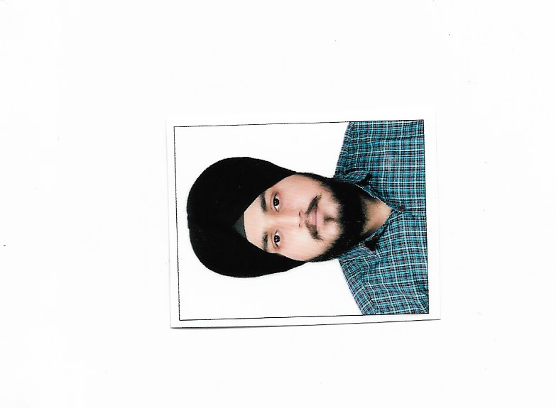

Resume
Harpal Singh
Email :- HarpalSinghsyan2012@gmail.com
Phone no:-8916282818

Summary
Seeking a challenging position in a reputed organization where I can learn new skills,expand my knowledge and levrage my learnings.
Education

Work Experience
Work Experience:
Math, Physics and Computer Teacher 6/8/2015 – 31/3/2024
- I taught class XI and XII approx. 100 students and with having 100% passed result and at the Same time I have prepared for Banking exams.
- I have developed a very good communication and interpersonal skills by interacting with a number of students and their parents.
- I have developed a very good analytical skills by solving a wide variety of problems like in mathematics, physics numerical problems and various programming exercises.
- Responsible for developing interactive and interesting lesson plans based on approved curriculum.
Technical Skills
- Languages: C,C++,Python, Html, CSS, JavaScript, Core Java
- Tools Used : VS Code, Pycharm, Dev c/c++, IntelliJ Idea, Selenium
- Version Control System: Git
- Database : MySql
- Operating System Used : Windows 10,Windows 7
Academic Project
Library Management project(Using C++)
This Project consists of a student's roll number, name, issued book, author of the book and limitations for the number of books issued and a student can use a book and must deposit it within 15 days.
Rock paper scissors game using Python.
In this project I have used If Else ladder for the different cases and after 5 trails it will display the score of human and cpu and show the winner at last.
An Analog Clock Using Pure HTML, CSS and JavaScript.
In this project I take a clock dial image and make its hands and styling using the CSS and Using JavaScript time functions and using mathematics formula for clock hand rotations.
Hospital Management System using C.
This project consist of all the information related to patients including their personal data, their diseases ,you can also search ,edit and delete the data of any patients. This project uses the concepts of file handling, if else, case statements and while loops.
Extra Curricular Activites:
- Participated in Chess Event in Lpu Global Open fest(youthvibe).
- Participated in Tech-Tickle (Techno Quiz) in Lpu Global Open fest(youthvibe).
- Participated in all School Level Cricket Tournaments.
Personal Information
Father’s Name : Balbir Singh
Marital Status : Single
Nationality : Indian
Languages : English, Hindi & Punjabi